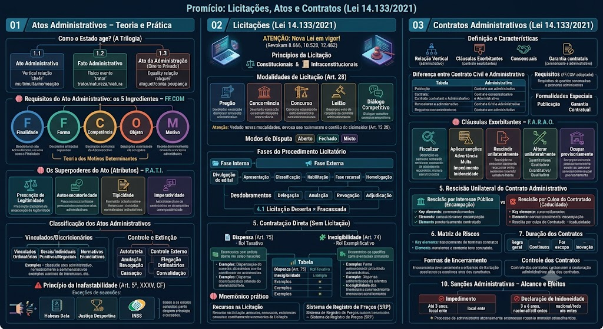

1. Como o Estado age? (A Trilogia)
1. Como o Estado age? (A Trilogia)
Antes de estudarmos o Ato Administrativo a fundo, precisamos entender que o Estado faz três coisas diferentes no dia a dia. Vamos colocar cada uma em sua 'caixinha':
1.1 Ato Administrativo
1.1 Ato Administrativo
É a decisão oficial, a 'canetada' baseada no Direito Público. O Estado age como 'chefe' (relação vertical), impondo regras.
O que é: Uma manifestação de vontade que cria, modifica ou extingue direitos.
Exemplo Prático: O guarda de trânsito aplicando uma multa ou o Prefeito nomeando você após passar no concurso.
1.2 Fato Administrativo
1.2 Fato Administrativo
É a ação na prática, o trabalho braçal ou o evento da natureza. Não tem 'canetada', é o mundo físico acontecendo.
Naturais: Uma enchente que obriga a prefeitura a agir, ou a morte de um servidor (gera o direito à pensão para a família).
Voluntários (Ato-Fato): O trator da prefeitura demolindo um muro condenado, ou a viatura batendo no seu portão sem querer (gera dever de indenizar).
1.3 Ato da Administração (Direito Privado)
1.3 Ato da Administração (Direito Privado)
Aqui o Estado tira o terno de 'chefe' e veste roupas comuns. Ele age em pé de igualdade com o cidadão (Direito Privado), sem impor nada à força.
Exemplo Prático: A prefeitura quer alugar a sua casa para fazer um posto de saúde. Ela não pode tomar a casa; ela assina um contrato de aluguel normal com você, regido pela Lei do Inquilinato. Outro exemplo: a Caixa Econômica abrindo uma conta poupança para você.
2. Requisitos do Ato Administrativo: os 5 Ingredientes – FF.COM
2. Requisitos do Ato Administrativo: os 5 Ingredientes – FF.COM
F Finalidade (Para que serve?): O objetivo final tem que ser sempre o Interesse Público. Se um prefeito desapropria o terreno de um inimigo apenas por vingança pessoal, ocorre o 'desvio de finalidade' (e o ato é ilegal).
F Forma (Como se apresenta?): A lei exige que o ato seja, via de regra, escrito e motivado (explicado). O Estado não costuma dar ordens 'de boca', tudo precisa estar no papel.
Obs: Formas do Ato: Publicação (condição de eficácia, não de existência), Motivação (exposição dos motivos, obrigatória para atos que afetam direitos ou para atos discricionários, com exceções – ex: atos de mero expediente).
C Competência (Quem assina?): Só quem tem poder legal pode praticar o ato. Um diretor de escola não pode demitir um professor – isso é competência do Secretário de Educação.
O Objeto (Sobre o quê?): É o conteúdo do ato – deve ser lícito, possível e determinado.
M Motivo (Por quê?): É a situação de fato que autoriza a prática do ato. Para atos vinculados, o motivo está previsto em lei; para os discricionários, o administrador escolhe o motivo dentro da lei.
Teoria dos Motivos Determinantes
Teoria dos Motivos Determinantes
A Administração fica amarrada (vinculada) aos motivos que ela declarou. Se for comprovado que o motivo alegado é falso ou inexistente, o ato será anulado.
Exemplo Clássico: Um Prefeito exonera um servidor de cargo de confiança (que pode ser demitido sem justificativa), mas resolve colocar no papel que o motivo foi 'falta de verbas'. Se o servidor provar na Justiça que havia verba sobrando, a exoneração é anulada, pois o motivo declarado era falso. Mesmo que o Prefeito pudesse exonerar sem motivo, ele escolheu motivar – e a motivação deve ser verdadeira.
3. Os Superpoderes do Ato (Atributos) – P.A.T.I.
3. Os Superpoderes do Ato (Atributos) – P.A.T.I.
Depois de nascer, o Ato Administrativo ganha prerrogativas (superpoderes) que os nossos contratos civis não têm.
P – Presunção de legitimidade (relativa, admite prova em contrário – iuris tantum). Todo ato já nasce com aparência de legalidade e veracidade. Enquanto o particular (ou o Judiciário) não demonstrar a ilegalidade, o ato deve ser cumprido e produz todos os seus efeitos. Atenção: O ônus da prova é sempre de quem alega o vício — ou seja, o particular que contesta deve provar a ilegalidade.
A – Autoexecutoriedade: A Administração pode executar o ato sem precisar pedir autorização ao Judiciário. Ex: desapropriar, demolir um prédio em risco, aplicar multa. Mas nem todo ato tem esse poder: depende de previsão legal.
T – Tipicidade: O ato deve corresponder a uma figura prevista em lei. A Administração não pode inventar um ato novo para atingir uma finalidade sem lei.
I – Imperatividade (ou Coercibilidade): O ato se impõe a todos, independentemente da concordância do destinatário. Ex: uma ordem de serviço para desocupar uma área.
4. Classificação dos Atos Administrativos
4. Classificação dos Atos Administrativos
Para não virar bagunça, agrupamos os atos dependendo da liberdade que o administrador tem ou do seu conteúdo:
Quanto ao grau de liberdade (vínculo)
Quanto ao grau de liberdade (vínculo)
Vinculados: Nenhuma liberdade. A lei diz: 'aconteceu X, faça Y'. Exemplo: Se você cumpriu os requisitos para aposentadoria, o Estado é obrigado a conceder.
Discricionários: A lei dá uma margem de escolha (conveniência e oportunidade). Exemplo: O prefeito decide se é melhor construir uma praça ou reformar uma rua com a verba que sobrou.
Quanto aos destinatários (conteúdo)
Quanto aos destinatários (conteúdo)
Normativos (Gerais): Parecem leis, atingem todo mundo. Ex: Um decreto exigindo uso de máscaras.
Individuais: Atingem uma pessoa específica. Ex: A multa na sua placa ou a sua nomeação.
Classificação pela natureza (para que serve o ato?)
Classificação pela natureza (para que serve o ato?)
📜 Atos Normativos: São gerais e abstratos, com efeito erga omnes (vale para todos). Criam regras, não atingem pessoas específicas. Exemplos: Regulamentos, Instruções Normativas, Resoluções. Características: Efeito geral e oposição universal (diferente do efeito inter partes, que só atinge os envolvidos).
📋 Atos Ordinatórios: Ordens internas baseadas no poder hierárquico. Organizam o funcionamento da repartição. Ex: Uma portaria que escala o plantão dos guardas, instruções de serviço, circulares.
📩 Atos Negociais: Manifestações de vontade do Estado que concordam com o pedido do particular. Ex: licença para construir, autorização para porte de arma, permissão de uso.
⚖️ Atos Enunciativos: Declaram um fato ou situação jurídica, sem criar direito novo. Ex: certidão de tempo de serviço, atestado de bons antecedentes.
🛠️ Atos Punitivos: Aplicam sanções. Ex: multa, advertência, demissão de servidor.
Espécies mais comuns no dia a dia
Espécies mais comuns no dia a dia
Decretos: Exclusivos de Chefes do Executivo (Prefeitos, Governadores, Presidente). Servem para detalhar leis (regulamentos) ou atos de gestão.
Portarias e Despachos: Usados no dia a dia interno das repartições (nomear, instaurar processo, dar andamento).
Licenças vs. Autorizações: Licença é direito seu, vinculada. Autorização é precária e discricionária.
5. Controle e Extinção dos Atos: consertando os erros
5. Controle e Extinção dos Atos: consertando os erros
O Estado erra. Quando isso acontece, o ato precisa ser revisto. Além disso, um ato pode deixar de existir por outros motivos.
I – Controle Interno (Autotutela)
I – Controle Interno (Autotutela)
A própria Administração conserta a própria bagunça, de ofício (sozinha) ou se você reclamar.
Anulação (ou Invalidação): O ato nasceu ilegal (com vício). Apaga tudo desde o início (efeito retroativo ex tunc). Pode ser feita pela Administração ou pelo Judiciário.
Revogação: O ato é totalmente legal, mas não é mais conveniente ou oportuno. Não apaga o passado, só vale dali para frente (efeito ex nunc). Só a Administração pode revogar.
Convalidação (ou Saneamento): Quando o vício é sanável (ex: falta de motivação que pode ser suprida), a Administração pode corrigir e aproveitar o ato, mantendo seus efeitos.
Caducidade: O ato perde a eficácia pela ocorrência de condição resolutiva ou pela superveniência de fato impeditivo.
II – Controle Externo (Judiciário e TCs)
II – Controle Externo (Judiciário e TCs)
Quando alguém de fora analisa os atos do Poder Executivo.
Poder Judiciário: O juiz só analisa a LEGALIDADE. O juiz pode anular um ato ilegal da prefeitura, mas o juiz nunca pode revogar um ato do prefeito por achar 'inconveniente' (isso seria invasão de poderes). Além disso, o juiz nunca age sozinho, precisa ser provocado.
Tribunais de Contas: Auxiliam o Legislativo fiscalizando o dinheiro e o orçamento público.
🚫 Não se revoga:
🚫 Não se revoga:
Atos ilegais (esses se anulam).
Atos vinculados (não há juízo de mérito para reavaliar).
Atos que já exauriram seus efeitos (não se apaga o que já aconteceu).
Princípio da Inafastabilidade (Art. 5º, XXXV, CF)
Princípio da Inafastabilidade (Art. 5º, XXXV, CF)
Se a prefeitura negou um pedido seu, você NÃO precisa recorrer ao chefe do prefeito (via administrativa) antes de ir ao Juiz. Você pode ir direto ao Judiciário. Mas, como no Direito tudo tem exceção, veja abaixo:
Exceções (quando você NÃO pode ir direto ao juiz)
Exceções (quando você NÃO pode ir direto ao juiz)
1. Habeas Data (Dados pessoais): O juiz não tem sua ficha. Primeiro você tem que pedir à repartição. Só se eles negarem (ou ignorarem) é que você entra com a ação judicial.
Macete: 📂 Pedi a informação → Negaram → Fui ao Juiz.
2. Justiça Desportiva (Art. 217, CF): O jogador levou cartão vermelho e quer anular? Ele não pode processar o juiz de futebol na Justiça Comum de imediato. Tem que esgotar as instâncias nos Tribunais Esportivos (STJD, etc.) antes de ir ao Judiciário.
ATENÇÃO: Nova Lei em vigor!
ATENÇÃO: Nova Lei em vigor!
A Lei 14.133/2021 revogou as Leis 8.666/93, 10.520/02 (Pregão) e 12.462/11 (RDC). As modalidades Tomada de Preços e Convite NÃO EXISTEM MAIS na nova sistemática. O pregão foi incorporado como modalidade.
1. Princípios da Licitação
1. Princípios da Licitação
⚖️ Princípios Constitucionais: Isonomia, Transparência, Moralidade, Legalidade, Impessoalidade.
📜 Princípios Infraconstitucionais (Lei 14.133): Vinculação ao edital, Julgamento objetivo, Segregação de funções, Processo formal, Autonomia da vontade nas propostas.
Bizu: A Nova Lei 14.133/2021 revogou a Lei 8.666/93 (e a 10.520/02). Para concursos, verifique se a banca cobra a nova lei ou a antiga – a maioria já adotou a nova sistemática.
2. Modalidades de Licitação (Art. 28)
2. Modalidades de Licitação (Art. 28)
⚡ Pregão: obrigatório para aquisição de bens e serviços comuns (cujos padrões de qualidade e desempenho possam ser objetivamente definidos pelo edital com especificações usuais de mercado). Vedado para serviços de engenharia especiais. Julgamento: menor preço.
🏛️ Concorrência: para contratação de bens e serviços especiais, e obras/serviços de engenharia (comuns e especiais). Modalidade mais ampla, aberta a qualquer interessado.
🏗️ Concurso: para escolha de trabalho técnico, científico ou artístico (ex: projeto arquitetônico, obra literária). A premiação ou remuneração é fixada em edital.
🛒 Leilão: para alienação de bens móveis inservíveis ou imóveis, e para venda de produtos legalmente apreendidos ou penhorados. Julgamento: maior lance.
🤝 Diálogo Competitivo: nova modalidade para contratações de alta complexidade (ex: infraestrutura de grande porte, TI), onde a Administração discute com os participantes para definir a solução ideal e depois recebe propostas finais.
3. Modos de Disputa (Art. 56)
3. Modos de Disputa (Art. 56)
A Nova Lei organiza a forma como as propostas são apresentadas na fase de julgamento:
Aberto: Lances públicos, sucessivos e crescentes/decrescentes (todos os licitantes participam simultaneamente).
Fechado: Propostas sigilosas até o momento da abertura (cada um apresenta sua oferta sem conhecer as dos outros).
Misto (Aberto e Fechado ou Fechado e Aberto): Combinação de ambos – ex: primeira fase fechada, depois aberta para lances.
Sistema de lances com intermediação eletrônica: utilizado para pregão – lances em tempo real via plataforma eletrônica.
4. Fases do Procedimento Licitatório
4. Fases do Procedimento Licitatório
A Nova Lei inverteu o rito tradicional: agora o julgamento/classificação ocorre antes da habilitação, o que torna o processo mais ágil.
📂 Fase Interna (Preparatória)
📂 Fase Interna (Preparatória)
Autuação do processo administrativo. Definição do objeto (Estudo Técnico Preliminar e Termo de Referência). Comprovação de dotação orçamentária. Escolha do agente de contratação ou comissão. Elaboração do edital. Parecer jurídico (controle de legalidade). Autorização para a fase externa. Publicação obrigatória no Portal Nacional de Contratações Públicas (PNCP).
📢 Fase Externa
📌 Após a Fase Recursal – Desdobramentos
📌 Após a Fase Recursal – Desdobramentos
Devolução ao agente de contratação: para correção de vícios sanáveis (erros que não afetam o direito de terceiros).
Anulação: extinção por ilegalidade. Efeitos retroativos (ex tunc). Em regra, não gera indenização, salvo se o particular não tiver concorrido para o vício.
Revogação: extinção de licitação legal por motivo de conveniência e oportunidade, fundada em fato superveniente. Exige motivação expressa.
Adjudicação: ato final que atribui ao vencedor o direito de contratar – encerra o procedimento licitatório e dá início à fase contratual.
4.1 Licitação Deserta × Fracassada
4.1 Licitação Deserta × Fracassada
🫥 Deserta: Nenhum licitante interessado compareceu ao certame. Consequência: pode ensejar contratação direta por dispensa (se preenchidos os requisitos legais).
❌ Fracassada: Licitantes compareceram, mas todos foram desclassificados (proposta ruim) ou inabilitados (documentação irregular). Consequência: a Administração pode conceder prazo de 8 dias úteis para correção das propostas/documentos.
5. Contratação Direta (Sem Licitação)
5. Contratação Direta (Sem Licitação)
A regra é licitar, mas a lei prevê exceções, divididas em dois gêneros:
📄 Dispensa (Art. 75) – Rol Taxativo
📄 Dispensa (Art. 75) – Rol Taxativo
A competição é viável, mas a lei autoriza a Administração a não licitar.
Principais hipóteses: Valor abaixo do limite (obras até R$ 100.000; serviços/compras até R$ 50.000); Emergência/calamidade pública; Pesquisa científica/tecnológica com instituição especializada; Transferência de tecnologia; Doação (sem gasto público); Licitação deserta (se repetida e mantidas as condições).
Atenção: O rol é taxativo – só vale o que está escrito na lei.
🧩 Inexigibilidade (Art. 74) – Rol Exemplificativo
🧩 Inexigibilidade (Art. 74) – Rol Exemplificativo
A competição é inviável/impossível – a lei obriga a contratar diretamente.
Principais hipóteses: Fornecedor exclusivo; Serviços técnicos especializados de natureza predominantemente intelectual, com profissionais ou empresas de notória especialização (vedado para publicidade e divulgação); Artista consagrado; Credenciamento (ex.: médicos no SUS); Locação/aquisição de imóvel com características de instalação/localização que inviabilizem a competição (ex: único imóvel adequado para determinado fim público).
Mnemônico prático
Mnemônico prático
Dispensa = podia ter licitação, mas a lei deixou de fazer (faculdade).
Inexigibilidade = não tem como fazer licitação (impossibilidade).
6. Recursos na Licitação
Bizu dos efeitos
Bizu dos efeitos
Impugnação e Recurso contra julgamento = PARA TUDO (efeito suspensivo).
Recurso à autoridade superior = SEGUE O JOGO (efeito devolutivo).
7. Sistema de Registro de Preços (SRP)
7. Sistema de Registro de Preços (SRP)
📋 Como funciona: A Administração realiza uma licitação para registrar preços de bens/serviços comuns. Vários fornecedores são registrados com seus preços. Quando houver necessidade real, a Administração contrata diretamente um dos registrados, sem nova licitação.
Validade: até 12 meses, prorrogável por igual período.
✅ Vantagens: Agilidade, Economia, Planejamento.
Bizu: Registro de preços não é contrato – é um 'pré‑contrato' que autoriza contratações futuras. A adesão ao SRP por outros órgãos (carona) é permitida, desde que prevista no edital e com anuência do órgão gerenciador.
8. Portal Nacional de Contratações Públicas (PNCP)
8. Portal Nacional de Contratações Públicas (PNCP)
O PNCP é o sítio eletrônico oficial para divulgação de todas as licitações e contratos da Administração Pública (União, Estados, DF e Municípios). É obrigatório publicar:
- Edital e anexos.
- Aviso de licitação.
- Resultados e julgamentos.
- Contratos e seus aditivos.
- Dispensas e inexigibilidades.
A publicidade no PNCP substitui a publicação em Diário Oficial para muitos efeitos, mas a lei ainda exige a publicação resumida no Diário Oficial para contratos de maior vulto.
⚠️ Pegadinha: O PNCP é a única fonte oficial para licitações – a Administração não pode usar outros meios para dar publicidade.
1. Definição e Características
1. Definição e Características
📌 Definição: Contrato administrativo é o acordo de vontades entre a Administração Pública e um particular para atender ao interesse público. É uma manifestação bilateral de vontade, porém a relação não é de igualdade entre as partes. Trata-se de uma relação vertical, pois a Administração possui prerrogativas especiais chamadas cláusulas exorbitantes, que a colocam em posição de supremacia para proteger o interesse público.
🔹 Características principais:
- Contrato de adesão: as cláusulas são impostas pela Administração (o particular adere).
- Natureza pública: regido pelo Direito Público, com aplicação subsidiária do Código Civil.
- Formal: exige forma escrita e publicação.
- Sinalagmático: obrigações recíprocas, mas com desequilíbrio de poder.
- Comutativo: as prestações são definidas inicialmente, mas podem ser alteradas.
2. Diferença entre Contrato Civil e Administrativo
2. Diferença entre Contrato Civil e Administrativo
Contrato Civil: Partes em pé de igualdade (isonomia); Regido pelo Código Civil (Direito Privado); Autonomia da vontade – partes definem as regras; Ex.: aluguel de imóvel entre particulares.
Contrato Administrativo: Estado age com poder de império (relação vertical); Regido pelo Direito Público + leis específicas (Lei 14.133/2021); Cláusulas exorbitantes (alteração, rescisão, fiscalização, penalidades, ocupação temporária); Ex.: prefeitura contratando uma empreiteira para construir uma ponte.
3. Requisitos para existência do Contrato Administrativo – FF.COM adaptado
3.2 Formalidades Especiais
3.2 Formalidades Especiais
📜 Publicação: O contrato deve ser publicado no Diário Oficial para produzir efeitos contra terceiros. Sem publicação, a Administração não pode cobrar do particular, mas o particular pode cobrar da Administração (boa‑fé).
💰 Garantia Contratual: O particular deve prestar garantia para assegurar o cumprimento do contrato. A garantia pode ser prestada nas modalidades: caução (depósito em dinheiro ou títulos), seguro‑garantia, fiança bancária, ou outras previstas em lei.
Regra geral: até 5% do valor do contrato, podendo ser elevada a até 10% em obras de grande vulto (Art. 96 da Lei 14.133/2021). O percentual pode ser reduzido caso o contratado apresente garantia adicional ou comprove boa performance anterior.
Exceção: A Administração pode dispensar a garantia para contratos de baixo valor ou para serviços de natureza intelectual.
4. Cláusulas Exorbitantes – F.A.R.A.O.
4. Cláusulas Exorbitantes – F.A.R.A.O.
Mnemônico amplamente utilizado para recordar as prerrogativas da Administração nos contratos administrativos:
F – Fiscalizar a execução do contrato.
A – Aplicar sanções em caso de inexecução total ou parcial.
R – Rescindir unilateralmente o contrato por interesse público.
A – Alterar unilateralmente o contrato (para mais ou para menos).
O – Ocupar provisoriamente bens, instalações ou pessoal (ligado a serviços essenciais).
Vale lembrar que essas cláusulas são decorrentes da supremacia do interesse público e devem ser exercidas com moderação, respeitando o equilíbrio econômico-financeiro do contrato.
Detalhamento das cláusulas exorbitantes
5. Rescisão Unilateral do Contrato Administrativo
5. Rescisão Unilateral do Contrato Administrativo
A Administração pode rescindir unilateralmente o contrato em duas situações principais (na Lei 14.133/2021, o termo genérico é 'rescisão unilateral', mas a doutrina distingue):
🏛️ Rescisão por Interesse Público (Encampação – na concessão)
🏛️ Rescisão por Interesse Público (Encampação – na concessão)
Rescisão por interesse público, mesmo sem culpa do contratado.
Características: Interesse público superveniente. Há indenização prévia ao contratado pelos prejuízos sofridos. Depende de autorização legislativa, nos casos previstos em lei.
Macete: Interesse Público + Indenização prévia + Autorização legislativa.
📌 Observação: O termo Encampação é de uso específico dos contratos de concessão de serviço público (Lei 8.987/1995). Na Lei 14.133/2021, a rescisão por interesse público é o gênero, e a encampação é uma espécie que se aplica às concessões. Em ambos os casos, o Estado retoma o serviço antes do prazo, indenizando o particular.
❌ Rescisão por Culpa do Contratado (Caducidade – na concessão)
❌ Rescisão por Culpa do Contratado (Caducidade – na concessão)
Rescisão por descumprimento contratual pelo contratado.
Características: O contratado descumpre suas obrigações. Não há indenização prévia ao contratado. Não depende de autorização legislativa. Exige processo administrativo com contraditório e ampla defesa.
Macete: Descumprimento + Sem indenização + Sem autorização + Processo administrativo.
📌 Observação: O termo Caducidade também é típico das concessões, mas a lógica de rescisão por culpa do contratado se aplica a qualquer contrato administrativo. Na Lei 14.133/2021, a rescisão unilateral por culpa do contratado é tratada como rescisão por inexecução (Art. 137).
6. Matriz de Riscos (Art. 22, §2º e 103)
6. Matriz de Riscos (Art. 22, §2º e 103)
A Nova Lei 14.133/2021 introduziu a Matriz de Riscos como cláusula obrigatória em contratos de grande vulto e recomendada para os demais.
O que é: Cláusula contratual que aloca formalmente os riscos do contrato (quem arca com imprevistos ambientais, econômicos, geológicos, etc.).
Efeito no equilíbrio econômico‑financeiro: Se o risco que se concretizar já estava alocado ao particular na Matriz de Riscos, não haverá direito à repactuação ou reajuste. Se o risco não estava previsto ou foi alocado à Administração, a parte afetada pode pedir a recomposição do equilíbrio econômico-financeiro.
Exemplo: Uma obra de túnel pode ter risco geológico. Se a Matriz de Riscos atribuir esse risco à contratada, ela não poderá pedir aumento de preço se encontrar rocha dura. Se o risco for do Estado, a contratada poderá pedir reequilíbrio.
7. Duração dos Contratos (Arts. 105 a 114)
7. Duração dos Contratos (Arts. 105 a 114)
A Lei 14.133/2021 flexibilizou os prazos contratuais, com regras específicas:
📅 Regra geral: A duração do contrato fica adstrita à vigência do crédito orçamentário (máximo 1 ano), salvo exceções.
🔄 Serviços e fornecimentos contínuos: Vigência inicial de até 5 anos, prorrogável até o limite máximo de 10 anos.
🏗️ Contratos por escopo (execução parcelada): O prazo é prorrogado automaticamente quando o objeto não for concluído no prazo fixado, desde que a prorrogação seja justificada e não ultrapasse o prazo necessário para a conclusão do objeto.
⚠️ Atenção: Os prazos de vigência são contados a partir da data da assinatura do contrato, e não da publicação.
8. Formas de Encerramento do Contrato
9. Controle dos Contratos Administrativos
9. Controle dos Contratos Administrativos
As mesmas regras de controle dos atos administrativos aplicam-se aos contratos, tanto no âmbito interno (autotutela) quanto externo (Judiciário e Tribunais de Contas).
Anulação: por ilegalidade, com efeitos retroativos.
Revogação: por conveniência, só pela Administração, efeitos futuros.
Convalidação: correção de vícios sanáveis.
O Judiciário só pode anular contratos ilegais; não pode revogar por mérito administrativo.
10. Sanções Administrativas – Alcance e Efeitos
10. Sanções Administrativas – Alcance e Efeitos
As penalidades previstas na Lei 14.133/2021 têm alcances distintos:
🚫 Impedimento de licitar e contratar: Veto de até 3 anos. Impede o fornecedor de licitar apenas no âmbito do mesmo ente federativo que aplicou a sanção (ex: Estado de São Paulo).
🚫 Declaração de inidoneidade: Veto de 3 a 6 anos. Impede de licitar e contratar com TODA a Administração Pública de TODOS os entes federativos (União, Estados, DF e Municípios). É a sanção mais grave, aplicada por infrações mais sérias (ex: fraude, corrupção, descumprimento reiterado).
⚠️ Procedimento: Ambas as sanções exigem processo administrativo com contraditório e ampla defesa. A declaração de inidoneidade é de competência do Ministro de Estado ou do Secretário Estadual/Municipal (conforme o ente).
📌 Atenção: O impedimento não tem efeitos automáticos em outros entes; a inidoneidade, sim, tem efeitos nacionais.
Mapa-mental
Material de estudo: Licitações, Atos e Contratos (Lei 14.133/2021)
Material complementar · Ver fonte no GitHub
Licitações (Lei 14.133/2021)
📢 Fase Externa
- 1. Divulgação do edital – obrigatória no PNCP (Portal Nacional de Contratações Públicas).
- 2. Apresentação de propostas e documentos – envio pelos licitantes.
- 3. Classificação/Julgamento – ordenação das propostas conforme critérios do edital.
- 4. Habilitação – análise documental do primeiro colocado. Divide‑se em: Habilitação jurídica (ex.: contrato social), Qualificação técnica (atestados de capacidade), Qualificação econômico‑financeira (balanços), Regularidade fiscal e trabalhista (certidões negativas), e Art. 7º, XXXIII, CF – comprovação de não emprego de menor de 16 anos (salvo aprendiz a partir de 14) e de menor de 18 em trabalho noturno/perigoso/insalubre.
- 5. Fase recursal – única oportunidade para recurso contra julgamento ou habilitação.
- 6. Homologação – o chefe do órgão valida todo o procedimento.
Diferença Essencial: Dispensa x Inexigibilidade
| Critério | Dispensa (Art. 75) | Inexigibilidade (Art. 74) |
|---|---|---|
| Natureza | Faculdade (pode ou não licitar) | Obrigação (não pode licitar) |
| Possibilidade | É possível competir | É impossível competir |
| Rol | Taxativo (numerus clausus) | Exemplificativo (rol aberto) |
| Exemplo | Valor até R$ 100k (engenharia) ou R$ 50k (demais) | Fornecedor exclusivo, notória especialização |
6. Recursos na Licitação
- 📋 Pedido de Esclarecimento: antes do julgamento, até 2 dias úteis antes da abertura das propostas.
- 🚫 Impugnação ao Edital: contestação de cláusula do edital. Prazo: 5 dias úteis antes da abertura. Efeito suspensivo (para a licitação).
- ⚠️ Recurso contra o julgamento/habilitação: prazo de 3 dias úteis da publicação do resultado. Efeito suspensivo.
- 📂 Recurso à Autoridade Superior: se o recurso for negado pela comissão, prazo de 3 dias úteis. Efeito meramente devolutivo (a licitação continua).
Contratos Administrativos (Lei 14.133/2021)
3. Requisitos para existência do Contrato Administrativo – FF.COM adaptado
- F Finalidade pública: atender ao interesse público – se for interesse privado do gestor, é ilegal.
- F Forma escrita: o contrato DEVE ser formalizado por escrito (não vale de boca).
- C Competência: quem assina deve ter poder legal (ex.: prefeito, secretário autorizado).
- O Objeto: lícito, possível e determinado (ou determinável).
- M Motivo: fundamento legal que justifica o contrato (lei, decreto, edital).
Detalhamento das cláusulas exorbitantes
- 1. Fiscalizar a execução: A Administração pode acompanhar, fiscalizar e exigir a correta execução do contrato. Observação: a fiscalização não exclui nem reduz a responsabilidade do contratado pelos danos ou falhas na execução.
- 2. Aplicar sanções: As principais sanções previstas na Lei 14.133/2021: Advertência; Multa (compensatória e/ou moratória); Impedimento de licitar e contratar – até 3 anos (efeitos apenas no ente aplicador); Declaração de inidoneidade – de 3 a 6 anos (efeitos perante toda a Administração). Toda penalidade exige processo administrativo com contraditório e ampla defesa.
- 3. Rescindir unilateralmente: A Administração pode rescindir o contrato nos casos previstos em lei, principalmente por descumprimento ou por interesse público. (Ver detalhes em 'Rescisão Unilateral' abaixo.)
- 4. Alterar unilateralmente: Qualitativa: mudança das especificações técnicas do objeto. Quantitativa: aumento ou redução da quantidade, dentro dos limites legais. Não é permitida alteração que modifique a natureza do objeto nem alterações arbitrárias. Limites quantitativos (Art. 125): - Regra geral: acréscimos e supressões de até 25% do valor inicial atualizado do contrato. - Exceção – reformas de edifício ou equipamento: acréscimos de até 50% (as supressões mantêm o limite de 25%).
- 5. Ocupação temporária: A Administração pode ocupar temporariamente bens móveis, serviços, instalações ou pessoal vinculado ao contrato quando necessário para assegurar a continuidade do serviço público, nos casos previstos em lei.
8. Formas de Encerramento do Contrato
- ✅ Execução total: cumprimento integral por ambas as partes – encerramento normal.
- 🤝 Rescisão amigável: Administração + particular concordam em encerrar antes do prazo.
- ⚠️ Rescisão unilateral da Administração: por conveniência do interesse público, com indenização (encampação) ou por culpa do particular (caducidade).
- 📉 Anulação: vício de ilegalidade desde a origem – efeitos retroativos (ex tunc), por ato da Administração ou decisão judicial.
Mapa-mental
